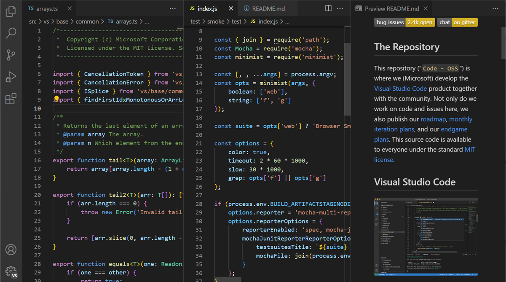
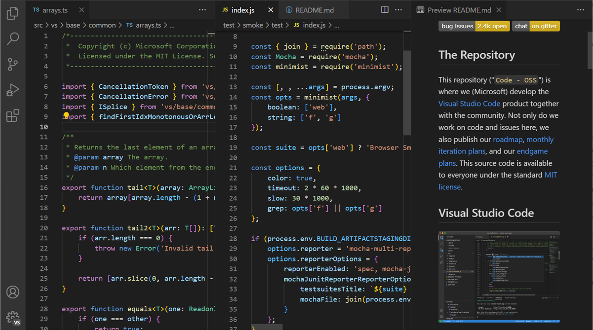

Lowercase Vahendid
-------------------------------------------------
Alumise astme CASE-vahendid on suunatud süsteemiarenduse elutsükli hilisematele etappidele, eriti detailse disaini, kodeerimise,
testimise ja hoolduse faasidele. Need aitavad koodi genereerida, lähtekoodi hallata ja testimisprotsesse automatiseerida.
Alumise astme CASE-vahendite peamised omadused on järgmised:
Koodigeneratsioon: aitavad automaatselt luua lähtekoodi, kiirendades arendusprotsessi.
Lähtekoodi haldus: võimaldavad efektiivselt hallata ja organiseerida lähtekoodi versioone ja muudatusi.
Automatiseeritud testimine: toetavad testide loomist ja läbiviimist, vähendades käsitsi testimise vajadust.
Veakontroll ja silumine: hõlbustavad vigade avastamist ja parandamist süsteemis.
Integratsioon ja juurutamine: aitavad süsteemi sujuvalt integreerida ja tootmiskeskkonda juurutada.
-------------------------------------------------
Milliseid vahendeid olen ise kasutanud?
Microsoft Visual Studio
Microsoft Visual Studio on Microsofti integreeritud arenduskeskkond (IDE).
Seda kasutatakse arvutiprogrammide, aga ka veebisaitide, veebirakenduste, veebiteenuste ja mobiilirakenduste arendamiseks.
 

Magento
Magento võimaldab kauplejatel luua selge ja organiseeritud kategooriate struktuuri, mis aitab klientidel kiiresti leida soovitud tooteid.
Lihtne ja intuitiivne liides võimaldab kiiresti lisada, redigeerida või kustutada kategooriaid, muutes hallatavate tootegruppide loomise lihtsaks.
Näide lowercase vahendist mida kasutanud ei ole
-------------------------------------------------
IntelliJ IDEA
IntelliJ IDEA sobib suurepäraselt veebiarenduseks, toetades laia valikut JavaScripti ja sellega seotud tehnoloogiaid,
nagu TypeScript, React, Vue, Angular, Node. js, HTML ja stiililehed.

Thonny
Thonny on algajatele mõeldud Pythoni programmeerimiskeskkond, mille paigaldusfailid ja -juhised leiad aadressilt http://thonny.org.
Lihtsuse huvides on Thonnysse Pythoni interpretaator juba sisse ehitatud, seega piisab ainult Thonny installimisest.